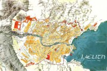
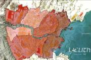
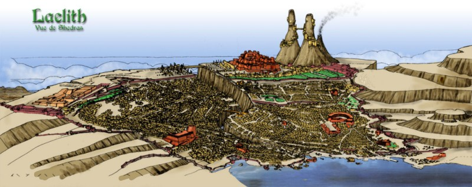

Laelith, la cité sainte
Bienvenue à Laelith, la cité sainte, celle que tout vrai croyant se doit d'avoir vue au moins une fois dans sa vie. Suivez le guide !
Présentation

{kind=link}
Carte de Laelith (4478 x 2691)
- La terrasse de la Chaussée du lac
- La terrasse de la Main qui travaille
- La terrasse de la Prospérité
- La terrasse du Nuage
- La terrasse du Châtiment
- La Haute Terrasse
Histoire et organisation
Testez vos connaissances de Laelith avec notre petit quiz !
- Ordre et Pouvoir, la garde et l'armée à Laelith
- Histoire de Laelith, quelques dates clefs
- Genèse et Oracle, la naissance de la cité
- Les Rois-Dieux
Lieux particuliers

Carte interactive de Laelith
- Les quatre temples, et l'affiliation pour les clercs
- La Haute Guilde, et les règles du commerce dans la cité sainte
- Le Lazaret, ou comment entrer à Laelith
- La maison des Mille fleurs, restaurant, salle de spectacle, tripot et maison de joie
- Le palais de l'Eau lustrale, un des thermes de Laelith
- Les Pics des Mages, des magiciens dans une ville sainte
- Les ruines du temple des Anciens, vestige du passé
- Le Théâtre
- L'Académie Tolérée de Magie
- L'auberge Lebrethon, une bonne base de départ pour les aventuriers
- La guilde des alchimistes
- La guilde des courtisanes
- La Langue Coupée, une guilde de voleurs
- L'ordre de Saris, un ordre de paladins

Laelith, vue d'un shédra